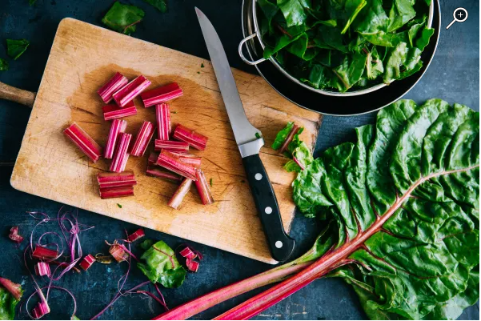

Plato 2
Indice
- Ingredientes
- Paso a paso
- Resultado final
-
10 acelgas
-
100mL de aceite
-
10g de sal
Paso 1: Lavar las Acelgas
-
Cogeremos las 10 hojas de acelgas y las lavaremos bajo el grifo para asi eliminar los posibles restos de tierra.
Paso 2: Cortar tallo
-
Cogeremos las 10 hojas de acelgas, de una en una cortaremos el tallo, dejaremos 2 dedos de margen desde la hoja. Esto se hace porque el tallo deja como unos "hilillos" y eso es muy incomodo a la hora de comer.

Paso 3: Meter acelgas en la olla hirviendo
-
Una vez cortado el tallo, meteremos las hojas de las acelgas en una olla con agua hirviendo durante 10 minutos.

Paso 4: Emplatar
-
Con una espatula con filtro como la de la imagen de abajo, pondremos la racion que queramos en el plato.

Paso 5: Añadir sal y aceite
-
Cogeremos la cantidad que usted vea bien de sal y la echaras por encima de las acelgas. Una vez hechado la sal, hecharemos un chorrito de aceite. Y ya estaria.

Este seria el resultado final.

Plato 2